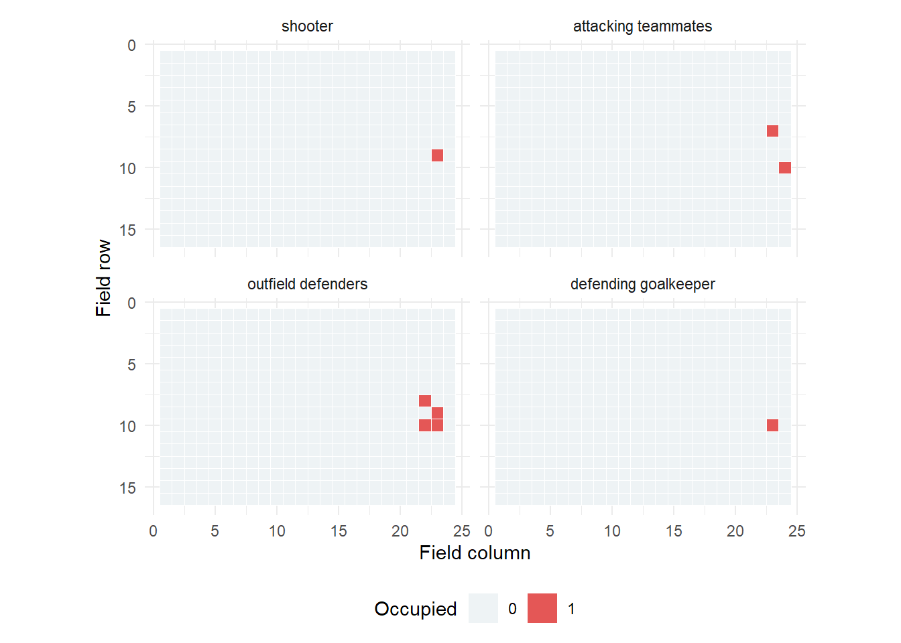
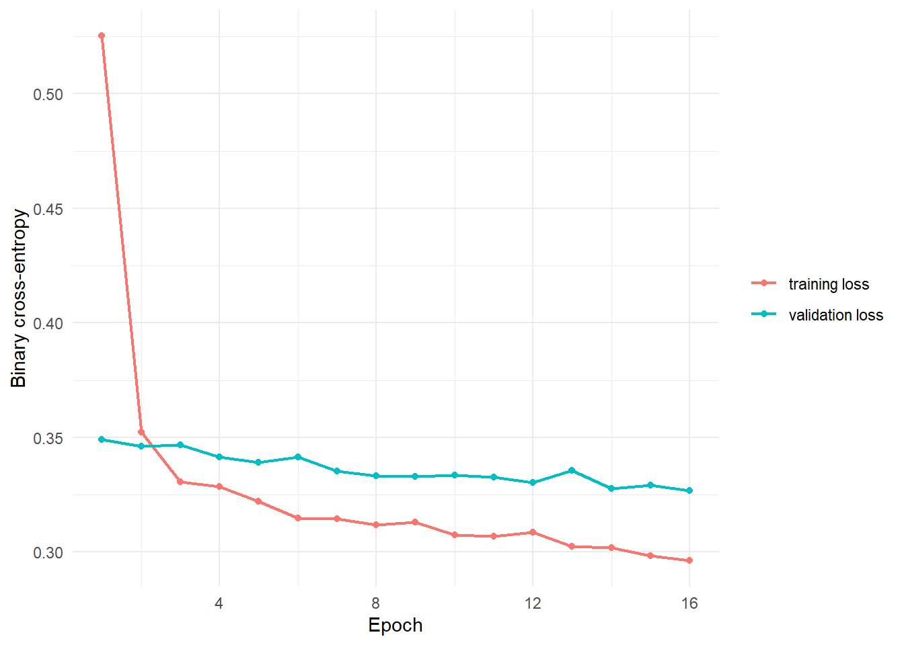
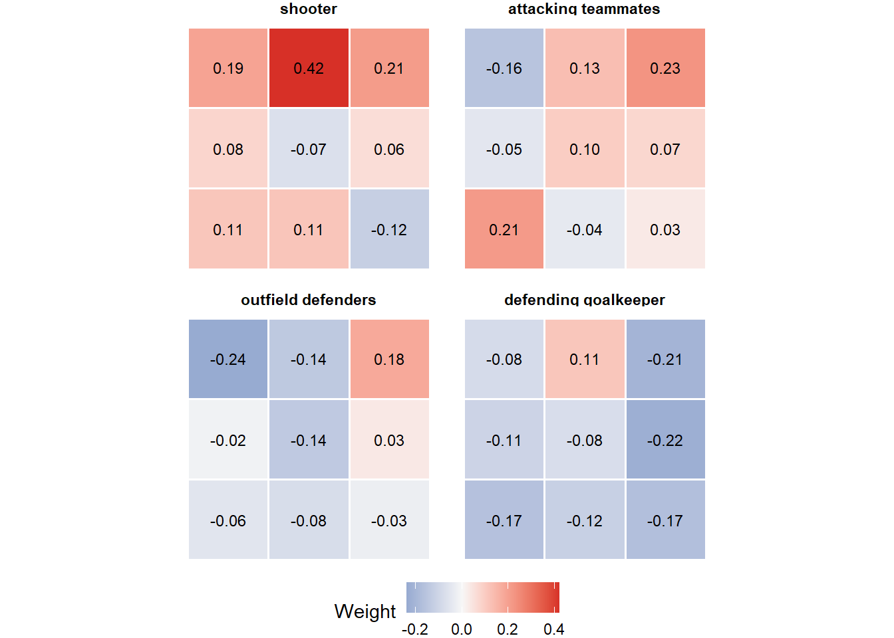
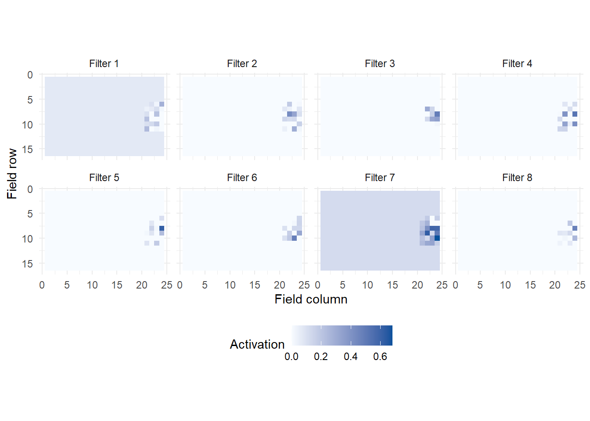

grid[channel, row, column] <- 1
# The resulting array is channels first:
# shot x channel x row x column
dim(spatial_array)3.5 Spatial Expected Goals with a 2D CNN
Use the CNN from Tutorial 3.4 to predict goal probabilities
1 Learning objectives
After this tutorial, you should be able to:
- turn a shot snapshot into four player-location maps;
- check the input and output dimensions of a CNN;
- train the network with mini-batches and early stopping;
- produce goal probabilities for held-out matches; and
- state what this application can and cannot establish.
2 Apply the CNN to shot prediction
Tutorial 3.4 explained filters as weighted-sum neurons applied to field patches. Now use them on real shots, reading defenders and goalkeeper positions across four aligned maps.
The target stays the same as in 3.1–3.2: whether a non-penalty shot becomes a goal. The inputs change from 10 shot features to player-location maps. Training follows 3.3’s predict, backpropagate, update, and validate cycle.
3 Create the four channels
Divide StatsBomb’s field into 24 columns and 16 rows. Each cell spans coordinate units. For player location , find its column and row :
The floor brackets mean “round down”; add 1 because R numbers rows and columns from 1. Smaller cells retain more detail but leave more empty cells and require more computation.
For , and . The helper moves exact boundary values just inside the field so indices stay valid. Use the same attacking direction for every shot.
Put 1 in that cell of the player’s channel: shooter, teammate, outfield defender, or goalkeeper.
4 Visualize one real shot
This is the test shot with the highest saved CNN probability, also examined in 3.6. It illustrates the maps, rather than a typical shot. Keep it out of tuning decisions, which use validation matches.
saved_results <- readRDS("data/model_results.rds")
selected_row <- saved_results$occlusion$row
selected_shot <- shots$metadata[selected_row, ]
selected_shot %>%
select(
match_date, team, player, distance, angle,
visible_attackers, visible_defenders, goal, outcome
) %>%
knitr::kable(digits = 2)| match_date | team | player | distance | angle | visible_attackers | visible_defenders | goal | outcome | |
|---|---|---|---|---|---|---|---|---|---|
| 1188 | 2022-12-05 | Brazil | Neymar da Silva Santos Junior | 8.9 | 0.83 | 2 | 6 | 0 | Off T |

Read all four panels as one moment. A colored cell records that player type at that location. Cells line up across panels so a filter can combine nearby player roles.
5 Prepare tensors
make_tensors(shots) is our preparation helper in torch_helpers.R. It uses torch_tensor(..., dtype = torch_float()) to turn R arrays into floating-point tensors. It also stores the row indices for each split. $size() reads a tensor’s dimensions; ordinary R arrays use dim(). Check before training:
data.frame(
tensor = c("spatial", "target"),
shape = c(
paste(tensors$spatial$size(), collapse = " x "),
paste(tensors$target$size(), collapse = " x ")
),
type = c("float", "float")
) %>%
knitr::kable()| tensor | shape | type |
|---|---|---|
| spatial | 1430 x 4 x 16 x 24 | float |
| target | 1430 x 1 | float |
For shots, targets have shape : one observed outcome per shot. The model must return one logit for each target.
For 64 shots, input shape is 64 x 4 x 16 x 24: shots, channels, rows, columns. Logits and targets both have shape 64 x 1. Swapping dimensions changes what the network reads. $unsqueeze(1) adds a first dimension when a single shot needs a batch axis.
6 Define the CNN
cnn_module() creates an instance of our nn_module definition. Its initialize() stores convolution and dense layers; forward() runs them when we call cnn(x). This is 3.4’s network, with 5,813 learned weights and biases.

NoteInspect the model in R
cnn <- cnn_module(number_of_channels = 4) # Construct layers and initial weights
cnnAn `nn_module` containing 5,813 parameters.
-- Modules ---------------------------------------------------------------------
* features: <nn_sequential> #1,172 parameters
* classifier: <nn_sequential> #4,641 parameterscount_parameters(cnn)[1] 5813Try five shots before training. Each should produce one logit and, after sigmoid, one probability:
# Select five shots, keeping all channels, rows, and columns.
example_logits <- cnn(tensors$spatial[1:5, ]) # Calls forward(); output is 5 x 1
example_probabilities <- torch_sigmoid(example_logits) # Logits -> probabilities
data.frame(
logit = as.numeric(as_array(example_logits)),
probability = as.numeric(as_array(example_probabilities))
) %>%
knitr::kable(digits = 3)| logit | probability |
|---|---|
| -0.103 | 0.474 |
| -0.102 | 0.475 |
| -0.098 | 0.476 |
| -0.099 | 0.475 |
| -0.101 | 0.475 |
These starting probabilities only check that data flow through the network. The randomly initialized weights have not yet learned from shot outcomes.
7 Train on a CPU
Use Adam and the same match splits as before. Each batch has up to 64 shots. Stop after 16 epochs or four epochs without a qualifying validation improvement, then restore the best saved weights.
torch_manual_seed(431)
cnn_fit <- fit_binary_model(
model = cnn_module(number_of_channels = 4),
x = tensors$spatial, # N x 4 x 16 x 24 player maps
y = tensors$target, # N x 1 outcomes; same shape as model logits
training_indices = tensors$train,
validation_indices = tensors$validation,
epochs = 16,
batch_size = 64,
learning_rate = 0.003,
patience = 4,
seed = 431
)
data.frame(
best_epoch = cnn_fit$best_epoch,
elapsed_seconds = cnn_fit$elapsed_seconds,
parameters = count_parameters(cnn_fit$model)
) %>%
knitr::kable(digits = 2)| best_epoch | elapsed_seconds | parameters |
|---|---|---|
| 16 | 3.51 | 5813 |
fit_binary_model() returns a list: cnn_fit$model holds the best saved network and cnn_fit$history contains the losses plotted below. The small grid keeps training manageable on a CPU. More epochs need not improve predictions on new matches.
Prediction uses model$eval() to turn dropout off and with_no_grad() to skip gradient recording, as in 3.3. Read the curves for falling loss and signs of overfitting. Tutorial 3.6 uses saved results; a fresh run can differ slightly across computers and software versions.

8 Inspect a learned kernel and its feature maps
Recall the distinction from 3.4: a kernel contains learned weights; a feature map contains the responses to one shot. These figures use this page’s fresh fit. The later occlusion figure uses saved weights, so the two may describe different fitted models.
The first layer has eight filters. Below are filter 1’s four weight slices, one per player channel. Together they form one filter. To inspect its numbers:
first_convolution <- cnn_fit$model$features[[1]] # First stored layer (R starts at 1)
weights <- as_array(first_convolution$weight) # Convert the weight tensor to R
dim(weights) # 8 filters x 4 channels x 3 x 3
weights[1, , , ] # Filter 1, including all channels
Each filter produces one response map for this shot. Larger values mean stronger responses to that local player arrangement. ReLU sets negative responses to zero.

These calculated maps highlight different arrangements. Later layers combine their responses.
A filter’s bias can create a nonzero background even in empty areas. Local peaks show where the recorded players add a stronger response.
9 Predict validation matches
Keep the fitted weights fixed. Convert validation logits to probabilities, then score them against the observed goals. As in 3.1, lower log loss and Brier score are better.
cnn_probability <- predict_probability(
cnn_fit$model,
tensors$spatial,
tensors$validation
)
evaluate_probabilities(
shots$target[tensors$validation],
cnn_probability
) %>%
select(log_loss, brier) %>%
knitr::kable(digits = 3)| log_loss | brier |
|---|---|
| 0.327 | 0.095 |
validation_examples <- shots$metadata[tensors$validation, ] %>%
mutate(cnn_probability = cnn_probability) %>%
arrange(desc(cnn_probability)) %>%
select(team, player, distance, goal, cnn_probability) %>%
slice_head(n = 8)
validation_examples %>%
knitr::kable(digits = 3)| team | player | distance | goal | cnn_probability |
|---|---|---|---|---|
| France | Ousmane Demb<U+00E9>l<U+00E9> | 12.460 | 0 | 0.327 |
| Netherlands | Memphis Depay | 8.887 | 0 | 0.315 |
| Croatia | Andrej Kramari<U+0107> | 5.757 | 0 | 0.275 |
| England | Marcus Rashford | 6.297 | 0 | 0.263 |
| Portugal | Cristiano Ronaldo dos Santos Aveiro | 8.848 | 0 | 0.263 |
| Croatia | Ivan Peri<U+0161>i<U+0107> | 11.484 | 0 | 0.260 |
| Serbia | Aleksandar Mitrovi<U+0107> | 11.783 | 1 | 0.248 |
| Senegal | Isma<U+00EF>la Sarr | 4.329 | 0 | 0.245 |
10 What the model omits
Use these validation scores during development. Tutorial 3.6 compares all models on test matches after their settings are fixed.
This CNN has important limitations:
- a freeze frame captures one moment, not player movement;
- player velocity and body orientation are unavailable;
- a player outside the visible frame cannot be represented;
- placing coordinates into cells loses exact within-cell locations;
- the sample covers one tournament; and
- team and player identities are intentionally omitted to focus on geometry.
A possible hybrid runs the player maps through a CNN and the 10 shot features through an MLP, then joins their learned outputs before predicting. This would combine player arrangements with precise distance, angle, and shot characteristics.
Our comparison changes both the network and its inputs. A weaker CNN result could reflect the grid, the missing shot features, or the network. It cannot isolate architecture alone. The proposed hybrid still needs testing on development data; it is not among the reported models.
11 Practice
- Why is a player-type indicator a reasonable CNN channel?
- What information is lost when coordinates are placed on a grid?
- Why do we call
model$eval()before prediction? - Name one variable that would be suitable for a separate tabular branch.
TipShow answers
- Every cell uses the same field location across channels, so a filter can combine nearby player types.
- Exact within-cell location is lost, and multiple players of the same channel in one cell become one occupied cell.
- Evaluation mode disables training-only behavior such as dropout, making predictions deterministic for a fixed model and input.
- Exact shot angle, game time, score difference, shot technique, or another nonspatial contextual feature could enter a tabular branch.
12 Key takeaways
- The CNN reads four aligned player maps from the same shot moment.
- Keep dimensions in shot, channel, row, column order.
- The training loop is the same as for the MLP.
- Compare validation scores before claiming the richer network helps.